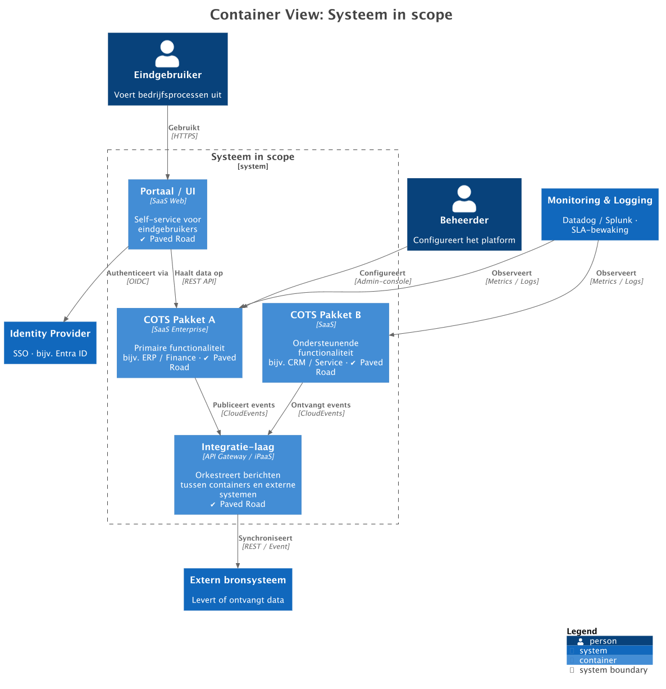

Architecture Definition
het Minimum Viable Architecture
De minimale set bouwstenen en weergaven die nodig zijn voor de huidige beslissingen. Niet meer. Elk weergave bestaat voor één stakeholderbehoefte.
Wat bevat dit werkproduct?
De Architecture Definition is het centrale architectuurartefact van MVA. Het beschrijft de minimale set bouwstenen per laag die nodig is om de huidige ADR's en projectbeslissingen te onderbouwen. Alles wat nu nog niet relevant is, wordt bewust uitgesteld. In COTS-contexten geldt één vaste regel: de integratielaag (glueware) is altijd first-class — nooit een implementatiedetail dat later wordt uitgewerkt. Integratiecode die COTS-componenten verbindt is een stelselmatig onderschatte kostenfactor met directe impact op betrouwbaarheid en lifecycle-kosten.
| Sectie | Inhoud |
|---|---|
| Bedrijfslaag | De bedrijfsprocessen en -functies die de oplossing ondersteunt. Minimaal gedetailleerd — alleen wat nodig is om de applicatielaag te motiveren. |
| Applicatielaag (COTS) | De COTS-pakketten, hun verantwoordelijkheden en de interfaces tussen hen. Elk component is gelinkt aan een ADR en aan de paved road-status. |
| Integratielaag (glueware) | First-class element. De integratiecode, adapters en patronen (API, event, file) die COTS-componenten verbinden. Bevat: integratiepatroon per koppeling, eigenaarschap van de glueware, geschatte adaptatiekosten en de impact op betrouwbaarheid. Inadequate integratieplanning is de grootste oorzaak van COTS-implementatieproblemen. |
| Technologielaag | De infrastructuurcomponenten (cloud, netwerk, opslag) die de applicatielaag ondersteunen. Verwijzing naar goedgekeurde paved-road componenten. |
| Bewust uitgesteld | Expliciete lijst van beslissingen en weergaven die later worden uitgewerkt — en wanneer de trigger daarvoor is. Nooit: de integratielaag en onomkeerbare beslissingen. |
De Architecture Definition omspant de Bedrijfs-, Applicatie- en Technologielaag van ArchiMate. De COTS-pakketten staan centraal in de applicatielaag; de technologielaag realiseert ze; de bedrijfslaag wordt bediend door de applicatielaag.
In C4-termen correspondeert dit werkproduct met een Level 2 Container-diagram. Het toont de interne bouwstenen van het systeem: COTS-pakketten, integratielaag, databases en queues — met hun onderlinge interfaces. De systeemgrens omsluit alle containers. Houd het diagram overzichtelijk: maximaal 20 elementen.

Wanneer gebruik je dit?
- Na de Architecture Vision — zodra de richting is bepaald, begint de Architecture Definition met de eerste bouwstenen.
- Bij iedere significante ADR — elke architectuurbeslissing die een component toevoegt of wijzigt, wordt gereflecteerd in de Architecture Definition.
- Als input voor Plan the Transition — de Architecture Definition geeft de baseline en doeltoestand voor de roadmap-werkpakketten.
- Bij een architectuurreview — het document is de referentie waartegen off-road-elementen worden getoetst.
- Bij onboarding van nieuwe teamleden — één document dat de gehele architectuur op hoofdlijnen beschrijft.
Tips voor invullen
- Begin met "uitgesteld" definiëren. Schrijf eerst op wat je bewust weglaat en waarom — dat voorkomt dat je toch te veel uitwerkt.
- Één weergave per stakeholderbehoefte. Maak geen weergave voor de volledigheid; maak ze alleen als iemand er een beslissing mee neemt.
- Label paved-road componenten expliciet. Markeer elk component als "paved road ✓", "pilot" of "off-road — zie REV-xx".
- Verbind elk component aan een ADR. Elk element in de Architecture Definition heeft een link naar de ADR die de keuze verantwoordt.
- Houd het levend. De Architecture Definition is een levend document — werk het bij bij elke significante ADR, niet achteraf in bulk.
C4 → ArchiMate · generieke elementmapping
Het C4-model structureert architectuurdiagrammen in vier abstractieniveaus. Dit werkproduct maakt gebruik van C4 Level 2 (Containers): het toont de interne bouwstenen van het systeem — COTS-pakketten, databases, queues en integratielagen — met hun onderlinge interfaces.
| C4 Niveau | Naam | Toepassing |
|---|---|---|
| Level 1 | System Context | Systeem + gebruikers + externe systemen |
| Level 2 | Containers | Interne bouwstenen: apps, databases, queues |
| Level 3 | Components | Interne structuur van een container |
| Level 4 | Code | Klassen, functies — buiten MVA-scope |
De onderstaande mapping geldt voor alle C4-niveaus; welke elementen voorkomen hangt af van het gebruikte niveau.
| C4-element | ArchiMate-element | Stereotype-property | Kleur (standaard) |
|---|---|---|---|
| Person | Business Actor | [Person] | #08427b |
| Software System (intern) | Application Component | [Software System] | #1168bd |
| Software System (extern) | Application Component | [Software System] | #999999 · tag=External |
| Container | Application Component | [Container: <technologie>] | #438dd5 |
| Database | Application Component | [Container: Database] | #438dd5 · cilindervorm |
| Queue / Message Bus | Application Component | [Container: Queue] | #438dd5 · tag=Queue |
| Component | Application Function | [Component] | #85bbf0 |
| Relatie (synchroon) | Flow Relationship | — | Richting: caller → callee |
| Relatie (asynchroon) | Flow Relationship | — | Via Queue of Message Bus |
Mapping conform: Jean-Baptiste Sarrodie, C4 Model, Architecture Viewpoint and Archi 4.7, 2020. Systeemgrens (System Boundary) wordt gemodelleerd als een ArchiMate Grouping-element.